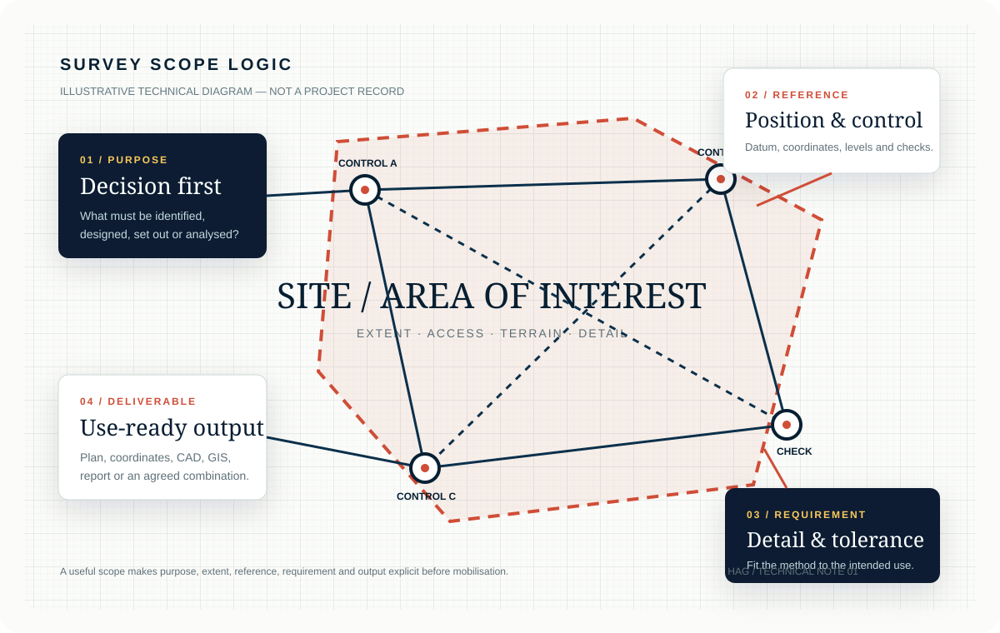
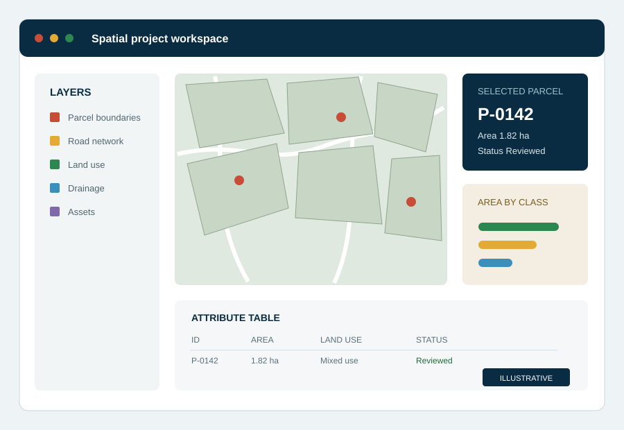

Not sure what survey you need? We look at what you already have and recommend the right next step.
Typical outputs Scope advice · data review · mapping support
1 / 1Moves automatically · swipe or use arrows
Not sure what to request?
Start with your project goal.
Select the decision you need to make. The site will suggest a practical survey route and add it to your project brief.
Recommended route
Boundary and cadastral survey
Confirm parcel identity, corner positions and the survey information needed for a land or boundary decision.
Bring
Location, available survey plan or title documents, access details
Possible outputs
Boundary plan, coordinates and survey records
How a scope is built
Purpose, reference, requirement, output.
Every assignment is scoped the same way before anyone mobilises to site, so the survey method matches the decision it needs to support.

HAG / Technical note 01
Field to file
Measurement, context and usable output.
Two stages of the same job: instrument time on site, and a structured file someone else can build on.
01 / FIELD MEASUREMENTControl, observations and site records.

02 / DIGITAL OUTPUTCoordinates, layers and export-ready files.
1 / 1Moves automatically · swipe or use arrows
The field photograph is representative of Hambare's survey practice and is not presented as evidence of a specific completed project. The workspace graphic is an illustrative sample, not project data.
Deliverables
Know what you are commissioning.
These illustrations show common output types. The exact content and file format are agreed for each project.
Illustrative output
Boundary plan
A controlled representation of parcel geometry, corner points, bearings, distances and relevant survey information.
Parcel geometry and corner references
Bearings, distances and coordinates
North point, scale and survey notes
Possible formatsPDF · print · CAD · coordinate schedule
1 of 4Select a tab or use the arrows
How a project starts
Four clear steps.
01
Tell us what you need
Send the location, purpose, available records and required output by form, call or WhatsApp.
02
Agree the scope
Field method, access, deliverables, timing and commercial terms are agreed.
03
Survey the site
Field observations, control and checks are completed for the agreed purpose.
04
Receive outputs
Plans, coordinates, files or reports are delivered in the agreed format.
Hambare Geosurveys Nig. Ltd.
Survey support for land and development decisions.
Hambare provides surveying, engineering measurement, mapping, remote sensing and GIS support for land, design and construction decisions.